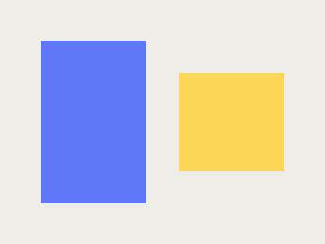
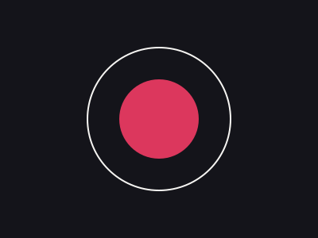
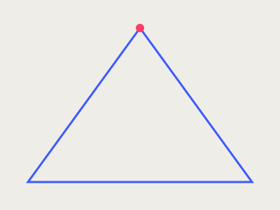

Identidad visual — Estudio Nimbo

Sistema de ilustración e identidad visual para Estudio Nimbo, un estudio de arquitectura interior. El reto fue traducir su lenguaje material — luz, textura, geometría — a un set de formas vectoriales que funcionaran tanto en papelería como en redes sociales.
Proceso
Partí de fotografías de los propios espacios del estudio para extraer una paleta de formas: volúmenes simples, sombras duras y una geometría que recuerda a planos arquitectónicos. Cada ilustración se construyó como un sistema modular de figuras que se pueden recombinar según el formato.
Resultado
El sistema se aplicó a tarjetería, portada de propuesta comercial y plantillas para redes sociales, manteniendo consistencia visual sin depender de fotografía. El cliente reporta mayor reconocimiento de marca en presentaciones comerciales desde su implementación.


